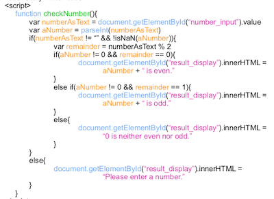

LOCAL STORAGE
This example is from page 42 of Lee S. Barney's book: Doing Stuff with Web Things.
How to store key-value pairs using JS. These three funtions illustrate how to use the viewer's local storage to save, load and display data.
(scroll back and forth if text is clipped)
function saveStory() {
var storyName = document.getElementById(“name_input”).value
var storyHTML = document.getElementById(“story_editor”).value
localStorage.setItem(storyName, storyHTML)
}
function loadStory(){
var storyName = document.getElementById(“name_input”).value
var storyHTML = localStorage.getItem(storyName)
document.getElementById(“story_editor”).value = storyHTML
}
function displayStory() {
var storyHTML = document.getElementById(“story_editor”).value
document.getElementById(“story_display”).innerHTML = storyHTML
}
var storyName = document.getElementById(“name_input”).value
var storyHTML = document.getElementById(“story_editor”).value
localStorage.setItem(storyName, storyHTML)
}
function loadStory(){
var storyName = document.getElementById(“name_input”).value
var storyHTML = localStorage.getItem(storyName)
document.getElementById(“story_editor”).value = storyHTML
}
function displayStory() {
var storyHTML = document.getElementById(“story_editor”).value
document.getElementById(“story_display”).innerHTML = storyHTML
}
How this works: Using javascript variables, the content of the html element ID'd as "name_input" is
associated with the content of another element with the ID of "story_editor". Together these
are passed to the localStorage object which is directed to save the text of from story_editor
using the key of name_input. It's a simple key-value pair most likely stored using an associated array.
Later, when the text is retreived, simply use the key, i.e., "storyName" to get whatever was stored. (Make sure to store it in a variable for clarity. [nesting can be hard to read])
To display the text, simply set the innerHTML of which ever textual element you'd like by first getting a context handler to it using getElementById and setting it's
REMEMBER: when retrieving content, use it's
Later, when the text is retreived, simply use the key, i.e., "storyName" to get whatever was stored. (Make sure to store it in a variable for clarity. [nesting can be hard to read])
To display the text, simply set the innerHTML of which ever textual element you'd like by first getting a context handler to it using getElementById and setting it's
value to the contents of your variable id, storyHTML.
REMEMBER: when retrieving content, use it's
value. When setting content use the innerHTML property.
User Input
This example is from page 56 of Lee S. Barney's book: Doing Stuff with Web Things.
An example of validating user input before working with it.
(scroll back and forth if text is clipped)

How this works: the user input is retrieved using
value and passed to the function parseInt. If the return value is valid, it's a number; if not, the user entered something that isn't understood within the context of javascript integers.